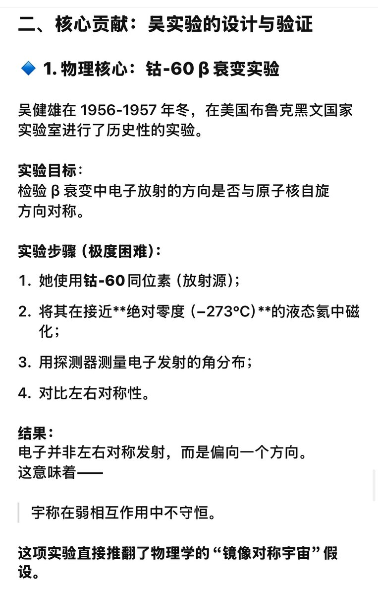
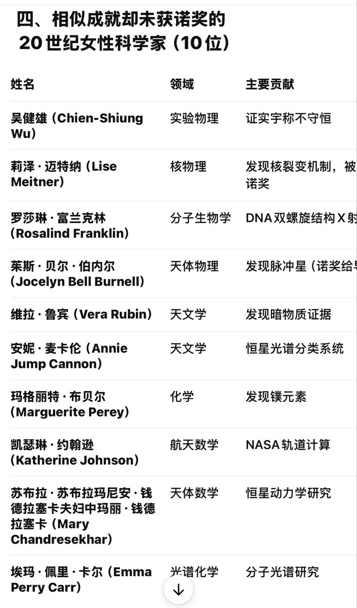

時璃風医詩🍥🌈
@hagishigure
我真求你們政治別來插足我們科學。
數學界沒有任何一個人會把龐加萊猜想叫佩爾雷曼定理。數學界也不會認為佩爾雷曼沒有貢獻。
你就是那種問你研究了具體什麼內容，重點在哪條表達式一個字說不出來去問open ai但是就是要樹立一個自己大女性連空氣路過都得批鬥的形象。


八尾だよ！（戦おう！)
@unounounoux
这几天看到杨振宁各种铺天盖地的宣传
真的想说爱丁堡真是有Dior就是爹啊
一面洗地老人家不是不爱国呀是为了研究和人类命运才留在美国还是我们的华人同胞
一面给他耄耋之际娶的娇妻台阶下说这是跨越时空的伟大的爱情啊
我呸 科学成就再“伟大”还不是下半身作祟
而且他只是提出假设
真正验证了的是吴健雄 https://t.co/CF8N2xTw2v